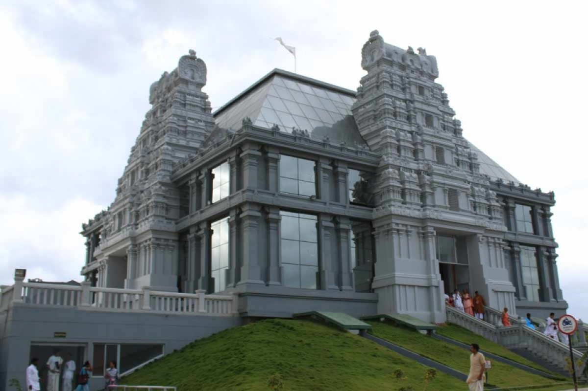

TOURIST PLACES

Hare Krishna Hill is the hillock on which this temple is situated.
ISKCON Bangalore is a charitable society with the…
The Cubbon Park, officially known as Sri. Chamarajendra
Park is a historic park, located in the heart of the city…
Bengaluru Palace is in the midst of the hustle and bustle so-called
electronic city of Bengaluru, Karnataka. The palace is…